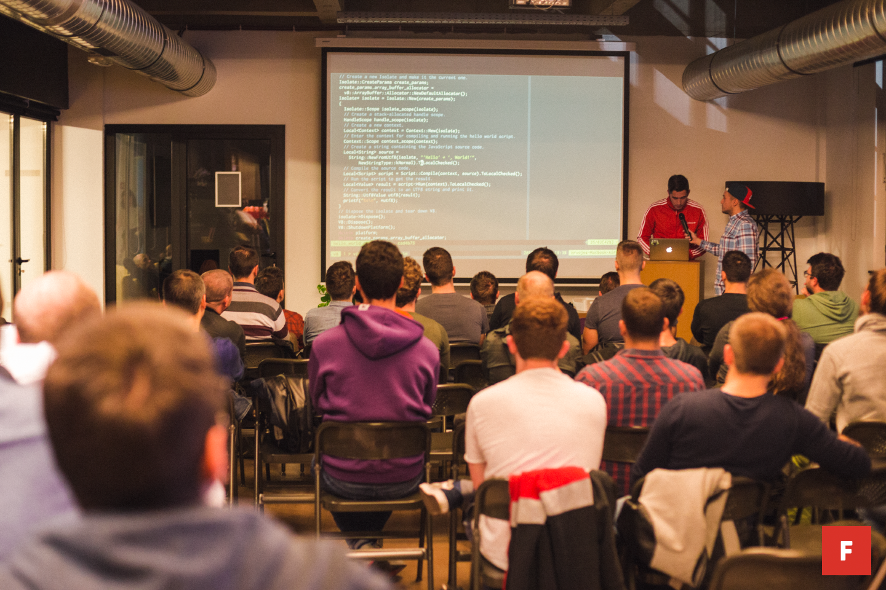

Being a part of community
Recently I came across a post from Antonio where he said he is writing a post about his experiences with public speaking. Him mentioning public speaking got my wheels turning, and I remembered my first time doing public speaking at a local programming meetup and how much it meant for me and where it got me.
My response was:
I did my first public speaking gig in 2016 in local meetup and it made a huge difference in my career because I got approached by a lot of cool people, expanded my network and got nice offers. Since then I had a few more similar gigs through which I learned how to communicate better, learned how to learn and teach more efficiently, better speaking skills which reflects on how I speak with managers and clients which results in better job positions. To this day it's always hard in stomach before a talk and I still do a lot of mistakes but the feeling after it is always worth coming back for.
But I forgot to mention, now I'm co-organizer of the same meetup where I held my first talk and I help with some other cool projects such as NodeSchool.
Interested in giving a talk?
I would like to encourage everyone to open up a meetup.com, search for meetups in your town and try visiting them a few times to get to know the people. Try to find organizers and ask them questions about what they would love to hear about. Remember, some hard problem you solved in the past and try to find a theme in that and apply to that meetup.
Recently on our JavaScript Zagreb #49 meetup colleague gave a talk about how he used Serverless, NodeJS and AWS to write a script that helped him find an apartment in Zagreb. Audience feedback was positive and most of them enjoyed the talk because it was short and practical. Keep in mind that people can't focus for a long time and you will bore them if you go in too much details for more than 25min.
Don't do the talk if everything you show can be read online in 15 minutes.
Interested in attending?
Even if you are not speaking (you should try) being a part of community is a good feeling because you will meet new friends, learn new things, increase your empathy and stabilize your ego. Empathy is a capacity to understand and feel other person. There is no better way to grow your empathy skills than by surrounding yourself with other people and practice those skills. Ego is another big thing. We all know about how ego can stand in a way and make us feel bad or do the wrong things. Imagine being surrounded with a lot of smart people that can serve as a reference to where you are in your career or how much knowledge you have. These informations can help compare yourself with others and you can see in which direction you need to go and which skills you need to improve.
Don't be afraid of others judging you based on your knowledge. Nobody knows everything. Nobody knows what they're doing. You probably know some things they don't! ;)
Introverted?
I was on this train before, but remember that the only way to beat something is to come face-to-face with it and win. Sometimes I was avoiding crowded places trying to be alone and I would never feel comfortable with other people to that point I thought I don't like people. But when I started working, it forced me to talk with my colleagues and clients and I got to love it and doing first public speaking gig made all the difference. Now I can't imagine who I was before and I would love to work more with people and I'm doing it every day. This post is also my way of trying to communicate with more people.